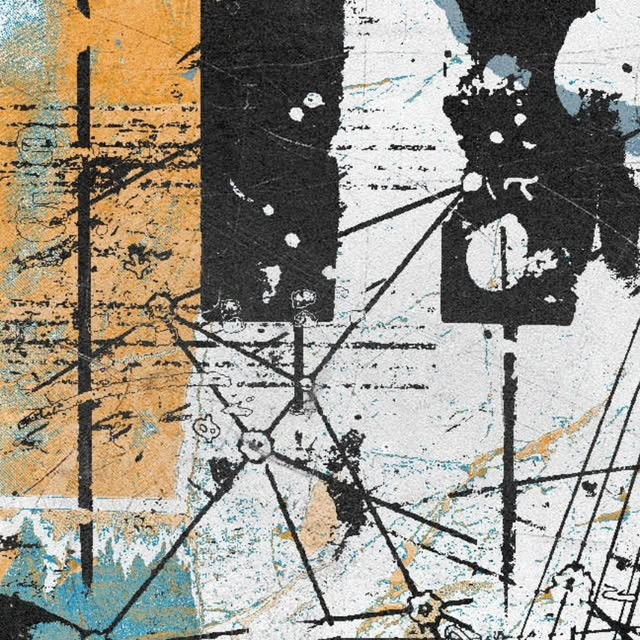
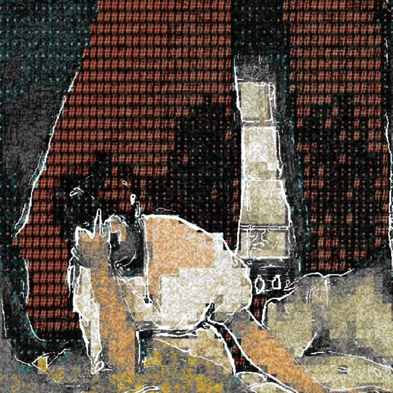

01
01
Dimusi Magazine
PROGETTO DI TESI · EDITORIALE
02 / ARCHIVIO VISIVO
Una raccolta di progetti, esperimenti
e idee diventate immagini.
01
PROGETTO DI TESI · EDITORIALE
 02
02
CORPORATE IDENTITY
 03
03
PLAYING CARDS DESIGN
 04
04
VISUAL SYNTHESIS STUDY

05POSTER DESIGN · INSTAGRAM

06POSTER DESIGN · INSTAGRAM
Ogni progetto è un piccolo mondo.
Esplora la raccolta completa su Behance ↗ Segui il processo su Instagram ↗